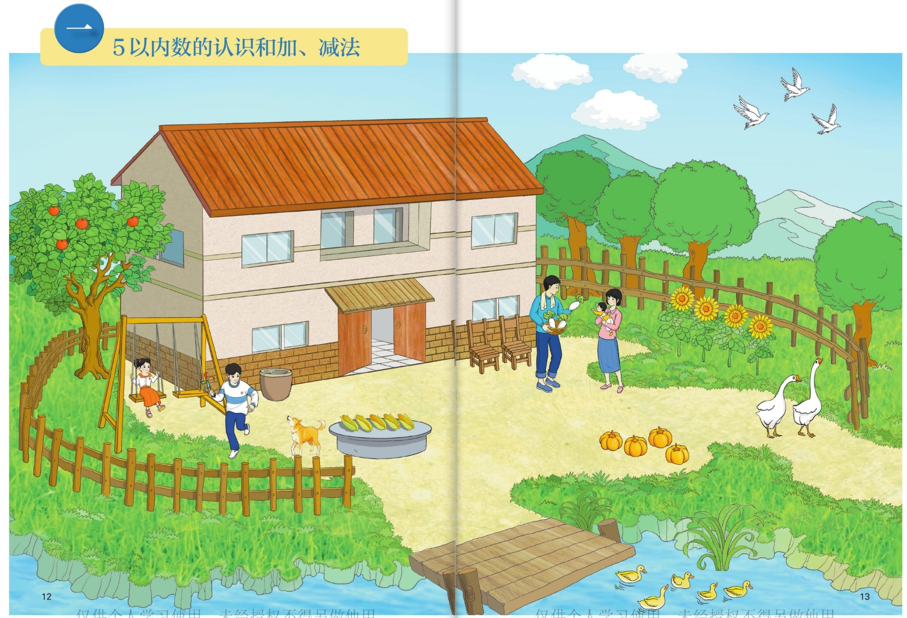
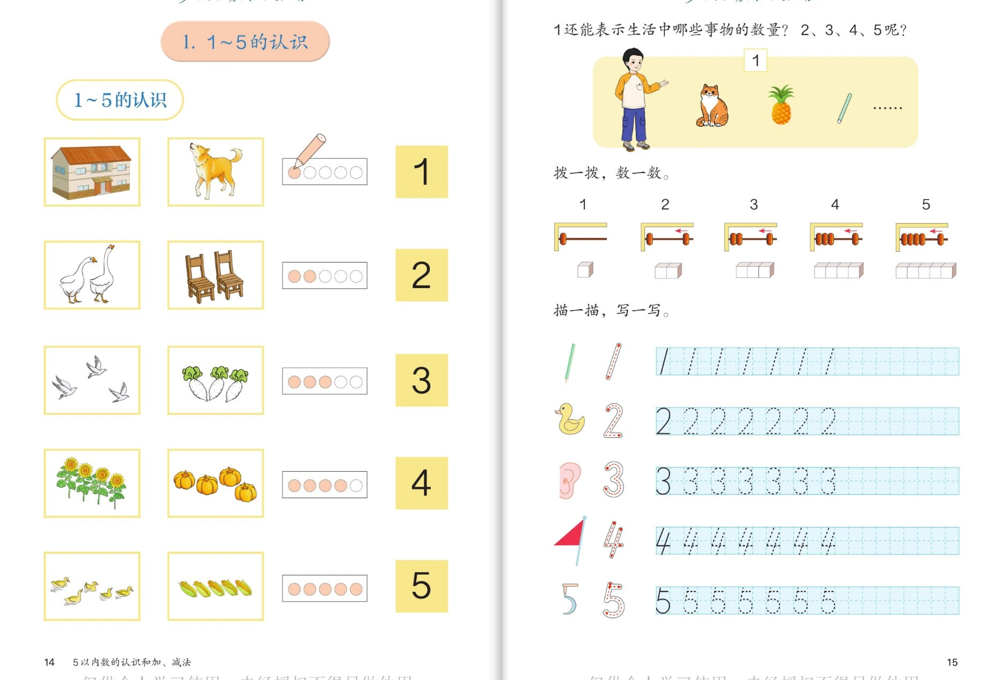
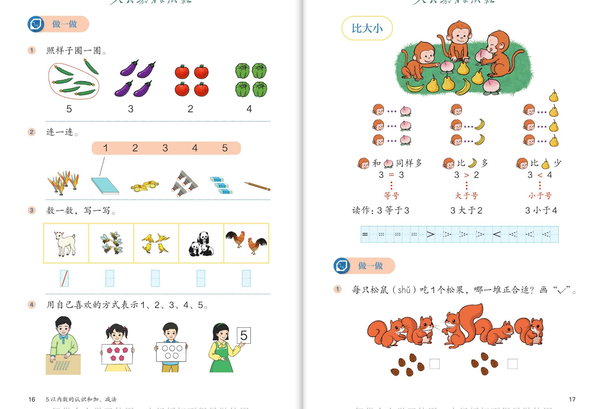
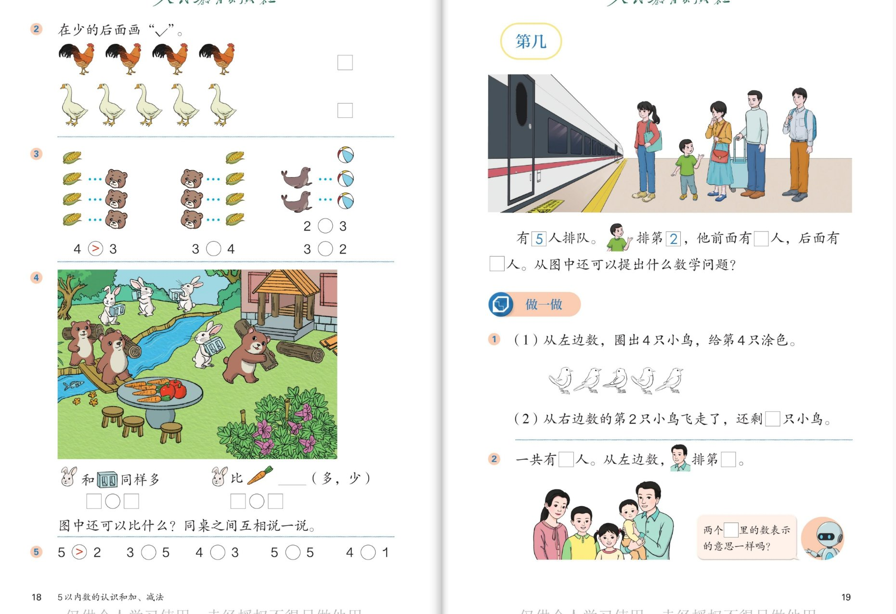
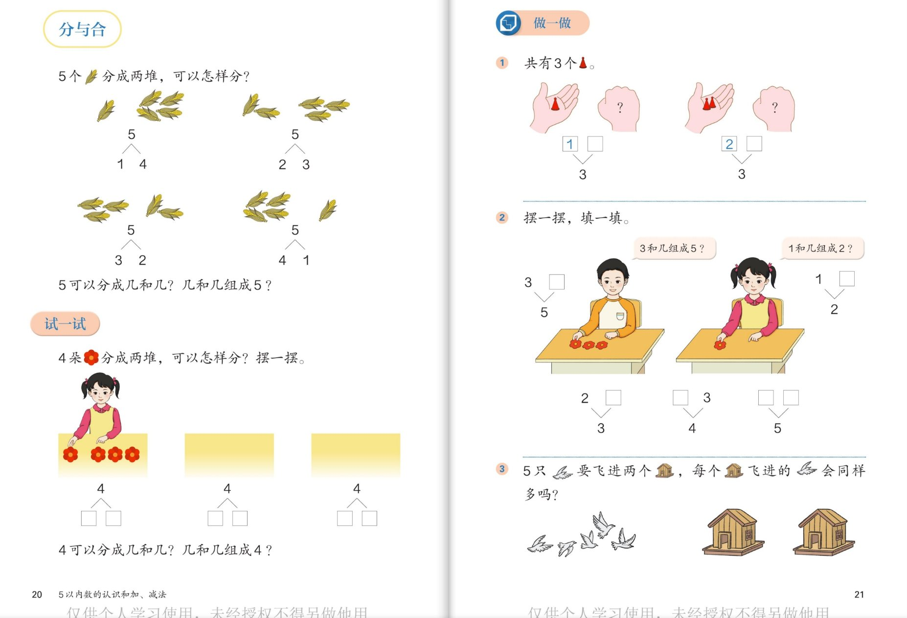
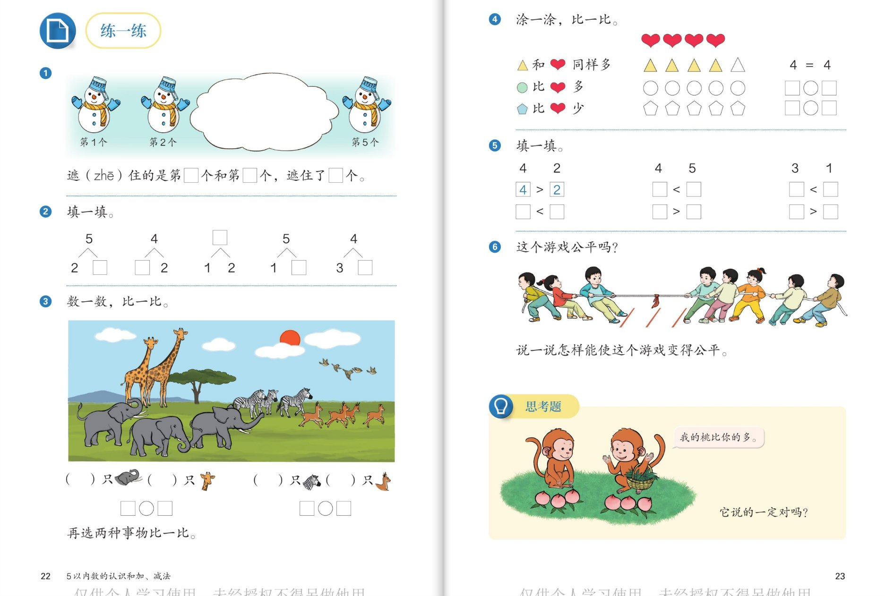

🧠 认知层 · 看懂图、会数数
💪 强化层 · 会比较、会分合
🚀 拓展层 · 爱思考、敢挑战
👨👩👧 使用建议：每个内容配 6 个问题，按"认知 → 强化 → 拓展"三层递进。
刚入学的孩子建议先做认知层的数数题建立信心，再做强化层；拓展层是思维火花，说不出标准答案也没关系，重点是"愿意想、敢于说"。
点击问题卡片可展开参考答案。
1
🏡 单元主题图 · 农家小院（第12～13页）
单元起点 · 数一数

📖 课本第 12～13 页 · 单元主题图
🧠 认知层看懂图，把图中事物和数对应起来
🦢
认知 1：数一数，栅栏边站着几只大白鹅？
看答案
参考答案：一共有 2 只大白鹅（用手指点着数：1、2）。
🌈 2 只鹅就可以用数字"2"来表示。
🌽
认知 2：石桌上摆着几穗玉米？河边游着几只小黄鸭？
看答案
参考答案：
- 石桌上有 5 穗玉米，可以用数字"5"表示。
- 河里游着 4 只小黄鸭，可以用数字"4"表示。
🌈 数的时候按一定顺序数，做到不重复、不遗漏。
💪 强化层数完会比多少，渗透符号意识
🎃
强化 1：数一数，地里有几个南瓜、几棵向日葵？南瓜比向日葵多还是少？
看答案
参考答案：
- 南瓜有 3 个，向日葵有 4 棵。
- 3 < 4，南瓜比向日葵少；也可以说：向日葵比南瓜多（4 > 3）。
🍎
强化 2：树上结了 3 个苹果，摘走 1 个，树上还剩几个苹果？
看答案
参考答案：3 个去掉 1 个，还剩 2 个。
💡 这就是"减法"的种子：从 3 里去掉 1，剩 2（3-1=2）。
🚀 拓展层开放发现，感受"数就在身边"
🔍
拓展 1：在这幅图里找一找，哪些东西的数量正好是"1"？
看答案
参考答案（不唯一）：
- 1 座房子、1 只小狗、1 个秋千、1 张石桌、1 座小木桥……
🌟 找得越多越棒！"1"可以表示一件一件的东西。
🗣️
拓展 2（小小挑战）：你能用"比多少"的话，说说图里两种东西的关系吗？
看答案
参考示例（说法不唯一）：
- "玉米有 5 穗，玉米比南瓜多。"（5 > 3）
- "大白鹅有 2 只，大白鹅比小黄鸭少。"（2 < 4）
🌈 会用"多、少、同样多"描述，就迈进了数学大门！
2
🔢 1～5 的认识（第14～15页）
数与物对应 · 拨珠 · 写数

📖 课本第 14～15 页 · 1～5 的认识
🧠 认知层数与物一一对应
🏠
认知 1：书上说"1 栋房子用 1 表示，2 只鹅用 2 表示"。照样子说一说：3 棵青菜、4 个南瓜、5 穗玉米分别用哪个数表示？
看答案
参考答案：
- 3 棵青菜 → 3；4 个南瓜 → 4；5 穗玉米 → 5。
- 规律：有几个，就用数字几来表示。
📿
认知 2：拨一拨，数一数：计数器上先拨 1 颗珠子，再拨上 1 颗，现在是几颗？再拨上 1 颗呢？
看答案
参考答案：
- 1 添上 1 是 2；2 再添上 1 是 3。
- 接着往下数：3 添 1 是 4，4 添 1 是 5。数越大，后一个数总比前一个数多 1。
💪 强化层联系生活，巩固数的含义
🍍
强化 1：书上的小朋友问："1 还能表示生活中哪些事物的数量？2、3、4、5 呢？"请你说一说。
看答案
参考示例（不唯一）：
- 1：1 只小狗、1 个菠萝、1 支铅笔、1 张嘴；
- 2：2 只眼睛、2 只手；3：3 角红领巾、三轮车 3 个轮子；
- 4：4 条腿的小狗、汽车的 4 个轮子；5：一只手 5 根手指、五星红旗 5 颗星。
🌈 说得越贴近生活越好！
✏️
强化 2：写一写：观察田字格里的"3"，它像什么？写"5"时先写哪一笔？
看答案
参考答案：
- "3"像耳朵，开口朝左；"2"像小鸭子，"4"像小红旗，"5"像钩子挂在一起。
- 写"5"先写下面的竖（像旗杆），再写右边的半圆，就像书上"5"的字形提示一样。
🌈 数字像什么是帮助记忆的比喻，孩子说"像什么"都可以。
🚀 拓展层体会数的抽象性
🤔
拓展 1（想一想）：4 棵向日葵和 4 个南瓜长得完全不一样，为什么都能用"4"表示？
看答案
参考答案：
因为它们数量一样多，都是 4 个。数字表示的是"数量的多少"，不是东西的样子。
💡 这是数概念的核心：不管是什么东西，只要数出来是 4 个，就能用"4"表示。
🎨
拓展 2（小小挑战）：用你喜欢的方式表示"5"（画一画、摆一摆、写一写都行），再和书上第④题里小朋友的办法比一比。
看答案
参考示例：
- 画 5 个圆圈○○○○○；摆 5 根小棒；写数字 5；伸出手数 5 根手指。
- 书上有的小朋友摆小棒、有的贴花片、有的举数字卡——表示"5"的方法有很多种！
🌟 只要能表示出"5 个"，用什么方式都对。
3
⚖️ 做一做 · 比大小（第16～17页）
圈一圈 · ＞ ＜ ＝

📖 课本第 16～17 页 · 做一做 / 比大小
🧠 认知层数对数量，认识三个符号
🍆
认知 1：照样子圈一圈：茄子有几根？西红柿有几个？把它们和对应的数连起来想。
看答案
参考答案：
- 茄子 3 根、西红柿 4 个、青椒 4 个（黄瓜 5 根书上已圈好）。
- 圈的时候把要数的全部圈在一起，数一数就知道数量。
📖
认知 2：连一连：把 1 本书和数字连起来。想一想：书为什么和"3"连？图上哪些东西要和"4"连？
看答案
参考答案：
- 书上已经示范：1 本书对应数字"1"（连到 1）。
- 数一数连一连：把每种物品数出数量，和一样大的数字连线。比如 4 支笔就连"4"。
🌈 连线时按从左到右的顺序，一样一样数，就不会连错。
💪 强化层会用符号比大小
🐵
强化 1：小猴比水果：3 = 3、3 > 2、3 < 4。这三个式子分别读作什么？"="、“＞”、“＜”分别叫什么名字？
看答案
参考答案：
- 3 = 3 读作"3 等于 3"，"="叫等号；
- 3 > 2 读作"3 大于 2"，"＞"叫大于号；
- 3 < 4 读作"3 小于 4"，"＜"叫小于号。
💡 记忆窍门：开口大大的那边对着大的数，尖尖的一头对着小的数。
🐿️
强化 2：每只松鼠吃 1 个松果，4 只松鼠该选哪一堆松果？为什么？
看答案
参考答案：
- 选 4 个松果的那一堆（4 只松鼠、4 个松果，一一对应，4 = 4，正合适）。
- 如果松果比松鼠少，有的松鼠就吃不到了；多了又会剩下。
🚀 拓展层换个说法、换个角度想
🔄
拓展 1：书上写"3 > 2"。不看图，你能把这句话"换一种说法"吗？"3 < 4"呢？
看答案
参考答案：
- 3 > 2，反过来还可以说"2 < 3"（2 小于 3）；
- 3 < 4，反过来还可以说"4 > 3"（4 大于 3）。
💡 同一个比较，正着说、反着说都对，只是把大于号和小于号换了个方向。
🎯
拓展 2（小小挑战）：在 2、3、4、5 中选两个数，用"＞"或"＜"写一个式子。你能写出几个？
看答案
参考答案（部分）：
- 2 < 3、2 < 4、2 < 5、3 < 4、3 < 5、4 < 5；
- 3 > 2、4 > 2、5 > 2、4 > 3、5 > 3、5 > 4。
🌟 写出 2～3 个就很棒，有兴趣可以挑战全部写出来！
4
🚄 比大小练习 · 第几（第18～19页）
比多少 · 序数 · “几”和“第几”

📖 课本第 18～19 页 · 比大小练习 / 第几
🧠 认知层比出多少，数出位置
🐓
认知 1：数一数，公鸡有几只、鹅有几只？在"少"的后面画"√"，该画在谁后面？
看答案
参考答案：
- 公鸡 4 只，鹅 5 只，4 < 5。
- "√"应画在公鸡后面，因为公鸡少。
👥
认知 2：火车站有 5 人排队，小朋友排第 2。他前面有几个人？后面有几个人？
看答案
参考答案：
- 排第 2，说明他前面只有 1 个人；
- 后面还有 3 个人（数一数：1、2、3）。
- 验证：1（前面）＋1（自己）＋3（后面）＝5 人，正好！
💪 强化层分清“几只”和“第几只”
🐦
强化 1：从左边数，圈出 4 只小鸟，再给第 4 只涂色。"圈出 4 只"和"涂第 4 只"的意思一样吗？
看答案
参考答案：
- 不一样！"4 只"说的是数量——一共 4 只小鸟；
- "第 4 只"说的是位置——按顺序数排在第 4 的那 1 只。
💡 "几"表示有多少，"第几"表示排在哪里，这是本课最重要的区别！
💨
强化 2：从右边数的第 2 只小鸟飞走了，还剩几只小鸟？
看答案
参考答案：
- 原来有 5 只，飞走 1 只，还剩 4 只。
- 注意：飞走的是"从右数第 2 只"这一只小鸟，只减少 1 只。
🌈 这里也悄悄藏着减法：5 去掉 1 是 4。
🚀 拓展层换个方向数，序数会变
👨👩👧👦
拓展 1：家庭合照里一共有 5 人。从左边数，爸爸排第 5；那从右边数，爸爸排第几？
看答案
参考答案：
从右边数，爸爸排
第 1。
- 发现了吗？方向一变，"第几"也跟着变：第 5 ↔ 第 1 正好"倒过来"。
💡 所以说"第几"之前，一定要先说清楚从哪边开始数！
🙋
拓展 2（小小挑战）：看着排队图，除了书上的问题，你还能提出什么数学问题？
看答案
参考示例（提法不唯一）：
- "排第 1 的是谁？从右数他排第几？"（从右数排第 5）
- "叔叔后面有几个人？"（4 个）
- "队伍里大人和小孩各有多少？谁多？"（大人 3 人、小孩 2 人，大人多）
🌟 自己会提问，比会答题更了不起！
5
🌽 分与合（第20～21页）
5的分与合 · 4的分与合 · 3的分与合

📖 课本第 20～21 页 · 分与合 / 做一做
🧠 认知层动手分一分，说说怎么分
🌽
认知 1：5 穗玉米分成两堆，可以怎样分？书上分出了几种？
看答案
参考答案：
一共能分成
4 种：
- 5 可以分成 1 和 4；5 可以分成 2 和 3；
- 5 可以分成 3 和 2；5 可以分成 4 和 1。
💡 按顺序分：一边从 1 个开始慢慢变多，另一边就慢慢变少，这样一分，一种都不会漏！
🌸
认知 2：试一试：4 朵红花分成两堆，可以怎样分？摆一摆再说。4 可以分成几和几？几和几组成 4？
看答案
参考答案：
4 可以分成
1 和 3、
2 和 2、
3 和 1，一共 3 种分法。
- 反过来：1 和 3、2 和 2、3 和 1 都能组成 4。
💪 强化层藏着几个，会推会填
✊
强化 1：做一做：一共有 3 个🔺，一只手露出 1 个，另一只手里藏着几个？露出 2 个呢？
看答案
参考答案：
- 3 可以分成 1 和 □：藏着的填 2（1 和 2 组成 3）；
- 3 可以分成 2 和 □：藏着的填 1（2 和 1 组成 3）。
💡 想"几和露出来的合起来是 3"，就是"分与合"的用处。
🌼
强化 2：摆一摆，填一填："3 和几组成 5？""1 和几组成 2？"再把书上的空全填完。
看答案
参考答案：
- 3 和 2 组成 5；1 和 1 组成 2。
- 书上其余的空：2 和 1 组成 3；□和 3 组成 4 填 1；组成 5 的空填 2 和 3（按书上图形对应）。
🌈 用小圆片或花生代替花朵摆一摆，边摆边说，记得更牢。
🚀 拓展层用分与合判断、推理
🕊️
拓展 1：5 只鸽子飞进 2 个鸽舍，每个鸽舍飞进的"会同样多"吗？为什么？
看答案
参考答案：
不会同样多。
- 因为 5 分成两份的四种分法（1和4、2和3、3和2、4和1）里，没有哪一种的两边一样多。
- 要想同样多，得能分成"2 和 3"中相等的两堆，但 2 ≠ 3。
💡 提示：像 4 可以分成 2 和 2（同样多），5 就不行——因为 5 是单数（奇数）。
🧩
拓展 2（小小挑战）：不用实物，你能按顺序背出 5 的所有分法，并说说"怎样记才不会漏"？
看答案
参考答案：
- 按顺序背：5 可以分成 1 和 4、2 和 3、3 和 2、4 和 1。
- 记忆窍门：一边从 1 开始每次多 1，另一边就每次少 1（1↔4、2↔3 交换位置）。
🌟 "有序思考"是数学家的好习惯，分与合就是第一次用到它！
6
⛄ 练一练 · 思考题（第22～23页）
综合练习 · 公平游戏 · 思辨

📖 课本第 22～23 页 · 练一练 / 思考题
🧠 认知层看图数数、填数
⛄
认知 1：5 个雪人排成一排，看得见第 1 个、第 2 个和第 5 个。遮（zhē）住的是第几个和第几个？一共遮住了几个？
看答案
参考答案：
- 遮住的是第 3 个和第 4 个；
- 一共遮住了 2 个雪人。
💡 按 1、2、3、4、5 的顺序数一数，缺的位置马上就找到了。
🦒
认知 2：数一数，比一比：动物园图里长颈鹿和斑马各几只？再选图中两种动物比一比。
看答案
参考答案：
- 长颈鹿 2 只，斑马 5 匹：2 < 5，长颈鹿比斑马少。
- 还可以比：大象 3 头、羚羊 4 只：3 < 4，大象比羚羊少。
🌈 选哪两种动物比都可以，说清"谁比谁多/少"就行。
💪 强化层填分与合，用符号比
🔢
强化 1：填一填："5 可以分成 2 和 □""□ 和 2 组成 4""5 可以分成 1 和 □"。你会填吗？
看答案
参考答案：
- 5 可以分成 2 和 3；
- 2 和 2 组成 4；
- 5 可以分成 1 和 4。
💡 填的时候想一想"几和几合成总数"，也可以摆小圆片帮忙。
❤️
强化 2：涂一涂，比一比：△和❤同样多时是 4 = 4。要让"○比❤多"，○该涂几个？符号里该填什么？
看答案
参考答案：
- ❤有 4 颗；要让 ○ 比 ❤ 多，○ 要有 5 个（涂 5 个○）；
- 式子是 5 > 4（或 4 < 5）。
🌈 5 以内比 4 多的只有 5，所以答案唯一；涂的时候从左往右涂，好看又清楚。
🚀 拓展层公平问题与思辨题
🪢
拓展 1：拔河比赛：左边 4 人、右边 5 人，这个游戏公平吗？怎样能使它变得公平？
看答案
参考答案：
- 不公平。因为 4 < 5，两边人数不一样多，人少的一边要吃亏。
- 办法（说一个就行）：①右边下去 1 人，两边都 4 人；②左边再上来 1 人，两边都 5 人；③从右边调 1 人到左边。
💡 公平的秘密就是：两边人数同样多（一一对应，正好配对）。
🐵
拓展 2（思考题）：两只猴子比桃子，右边的猴子说："我的桃比你的多。"它说的一定对吗？
看答案
参考答案：
不一定对。
- 右边猴子的桃装在篮子里，看不到全部，不能只凭感觉说多还是少；
- 要比一比、数一数才知道：左边猴子有 3 个桃，把篮子里的桃倒出来数一数，再和 3 比。
🌟 结论：不数一数、比一比，就不能随便下结论——这是重要的数学态度！如果篮里正好也是 3 个，那就是"同样多"，两种说法都不对。